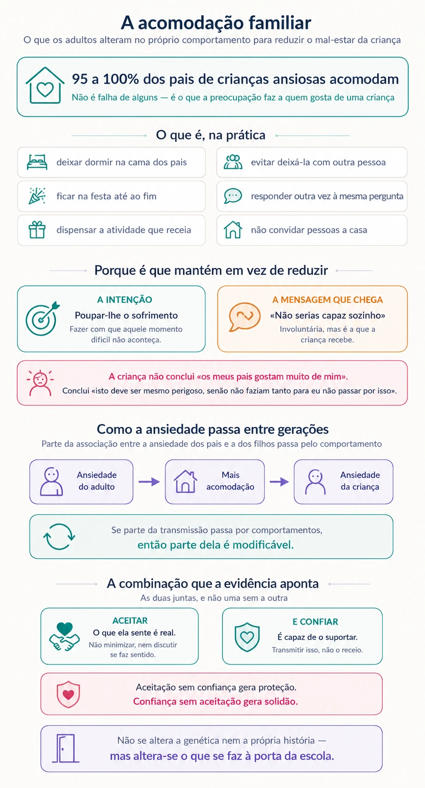

E se ele não se adaptar?
Nas mudanças de ciclo, quem passa pior noite antes do primeiro dia é frequentemente o adulto. Isso não é um defeito de carácter — mas tem efeitos sobre a criança que vale a pena conhecer.
A situação
A entrada para o primeiro ano. A passagem para o quinto, com sete professores em vez de um. A ida para o secundário, ou para uma escola nova onde não conhece ninguém.
Nas semanas anteriores, a criança pergunta pouco e dorme bem. O adulto é que acorda às três da manhã a pensar se fez a escolha certa, se ela vai arranjar amigos, se aquela escola era mesmo a melhor, se devia ter esperado mais um ano.
E no primeiro dia é o adulto que fica à porta mais tempo do que precisava, que volta atrás para mais um beijo, que liga à escola a meio da manhã para saber se está tudo bem.
Nada disto é errado. Mas há uma parte que importa saber: a criança está a ler-nos, e o que lê influencia o que sente.
O que se sabe
A preocupação dos adultos nas transições é esperada
As mudanças de ciclo mexem com os pais por razões que raramente se dizem em voz alta. Há a perda — a criança que entra na escola primária deixa de ser a de antes, e isso dói. Há a exposição — pela primeira vez, a forma como se educou vai ser vista por outros. E há a comparação, que começa quase de imediato.
Há ainda uma componente que é própria de cada família: quem teve uma experiência escolar difícil chega a estas transições com uma bagagem que a criança não tem. O receio não é sobre ela — é sobre uma memória.
A criança usa o adulto como referência
Perante uma situação nova e ambígua, as crianças procuram informação na cara de quem as acompanha. É um mecanismo básico e útil: se o adulto está tranquilo, provavelmente não há perigo; se está tenso, é melhor ter cuidado.
À porta da escola isto tem uma consequência prática direta. Uma despedida que se prolonga, com a expressão preocupada e a repetição de que vai correr tudo bem, comunica exatamente o contrário do que as palavras dizem: comunica que há motivo para receio, ou aquela pessoa não estaria assim.

A acomodação: o que é, e como se instala
Chama-se acomodação familiar às alterações que os adultos fazem no seu próprio comportamento para reduzir o mal-estar da criança. Deixar dormir na cama dos pais, evitar deixá-la com outra pessoa, ficar na festa até ao fim, responder outra vez à mesma pergunta, dispensar a atividade que ela receia.
É importante saber duas coisas sobre isto. A primeira é que praticamente todos os pais de crianças ansiosas o fazem — os estudos apontam para 95 a 100 por cento. Não é uma falha de alguns; é o que a preocupação faz a qualquer adulto que gosta de uma criança.
A segunda é menos confortável: apesar de bem-intencionada, a acomodação mantém a ansiedade em vez de a reduzir. E o mecanismo é conhecido — ao proteger, o adulto comunica involuntariamente que a criança não seria capaz de lidar com aquilo sozinha.
A criança não conclui «os meus pais gostam muito de mim». Conclui «isto deve ser mesmo perigoso, senão eles não faziam tanto para eu não passar por isso».
É por aqui que a ansiedade passa de uma geração para a outra
A associação entre a ansiedade dos pais e a dos filhos é conhecida há muito, e costuma atribuir-se a genética. Mas a investigação mostra que uma parte dessa transmissão passa pelo comportamento: pais mais ansiosos acomodam mais, e a acomodação explica parte da ligação entre a ansiedade da mãe e a do filho.
Isto tem uma leitura difícil e uma leitura esperançosa, e a esperançosa é a mais importante. Se parte da transmissão passa por comportamentos, então parte dela é modificável. Não se altera a genética nem a própria história — mas altera-se o que se faz à porta da escola.
Quando a casa se reorganiza à volta do receio
A acomodação tem duas formas. Uma é participar no que a ansiedade pede — responder às perguntas, ficar ao lado, acompanhar. A outra é alterar a vida da família para evitar aquilo que a criança receia: não ir a sítios, não convidar pessoas, mudar horários, deixar de fazer coisas.
A segunda é a que mais custa a reconhecer, porque se instala devagar e cada passo parece razoável. Vale a pena, de vez em quando, fazer a pergunta: o que é que esta família deixou de fazer no último ano por causa disto? A resposta costuma surpreender.
Não é o mesmo que ser insensível
Reduzir a acomodação não significa ignorar o sofrimento, nem obrigar a criança a enfrentar tudo sozinha. Essa leitura é errada e produz mais ansiedade, não menos.
O que a evidência aponta é uma combinação: aceitar que o que ela sente é real — e não minimizar, nem discutir se faz sentido — e ao mesmo tempo transmitir confiança de que é capaz de o suportar. As duas coisas juntas, e não uma sem a outra. Aceitação sem confiança gera proteção; confiança sem aceitação gera solidão.
O que fazer
Reconhecer de quem é a ansiedade. Antes de agir sobre a criança, vale a pena a pergunta: nas últimas semanas, quem tem estado mais preocupado? Se a resposta for «eu», é aí que o trabalho começa.
Despedidas curtas, seguras e sempre iguais. Um ritual breve, uma frase, e sair. Prolongar não acalma — dá tempo à ansiedade dos dois para crescer, e comunica dúvida.
Dizer o que se espera, não o que se receia. «Vai correr bem, e às três estou ali» transmite mais do que «não tenhas medo». A primeira dá uma imagem do que vai acontecer; a segunda nomeia o medo e nada mais.
Não conferir a meio da manhã. O telefonema à escola serve para acalmar o adulto, e a criança acaba por saber. Combinar com antecedência que a escola contacta se for preciso — e confiar nisso.
Escolher uma acomodação de cada vez. Não se desfaz tudo de uma vez, nem se deve. Escolher uma — a companhia à noite, a pergunta repetida, a atividade evitada — avisar a criança do que vai mudar e porquê, e manter durante duas ou três semanas antes de passar à seguinte.
Alinhar os dois adultos. Quando um protege mais e o outro exige mais, a criança fica no meio e a ansiedade aumenta. A conversa a ter é entre os adultos, não com ela.
Falar da própria escola com cuidado. Se a memória é má, ela não é da criança. Partilhar experiências difíceis antes de uma transição transmite receio sem lhe dar utilidade nenhuma.
Dar tempo antes de concluir. As primeiras semanas de um ciclo novo não são representativas. Muito do que preocupa em setembro está resolvido em novembro, sem que ninguém tenha feito nada de especial.
Quando procurar ajuda
Nem toda a preocupação precisa de acompanhamento — a maior parte passa com o tempo e com a adaptação. Mas há situações que justificam falar com alguém:
- A preocupação com a criança interfere com o sono, com o trabalho ou com o funcionamento do adulto.
- A família deixou de fazer coisas — sair, viajar, receber pessoas — por causa do receio.
- Verifica-se repetidamente onde a criança está, ou é difícil deixá-la com outros adultos de confiança.
- A adaptação da criança já se resolveu, mas a preocupação do adulto mantém-se.
- Há história pessoal de ansiedade que está a ser reativada por esta transição.
- Os adultos da casa discutem com frequência sobre como lidar com a criança.
Nestes casos, o acompanhamento pode ser dirigido aos pais e não à criança. É frequente, é eficaz, e em boa parte das situações resolve o que parecia ser um problema dela.
E quando é mesmo da criança?
Nem toda a dificuldade das primeiras semanas vem do adulto. Há um padrão próprio da criança — portar-se bem na escola e desmoronar em casa ao fim do dia — que tem outra explicação e outra resposta.
Este texto tem fins informativos e não substitui avaliação nem acompanhamento profissional. Cada situação exige uma leitura própria.
Referências
- Lebowitz, E. R., Woolston, J., Bar-Haim, Y., Calvocoressi, L., Dauser, C., Warnick, E., Scahill, L., Chakir, A. R., Shechner, T., Hermes, H., Vitulano, L. A., King, R. A., & Leckman, J. F. (2013). Family accommodation in pediatric anxiety disorders. Depression and Anxiety, 30(1), 47–54. https://doi.org/10.1002/da.21998
A prevalência da acomodação familiar e o seu papel na manutenção da ansiedade infantil apoiam-se no trabalho acima. A associação entre maior ansiedade parental e maior acomodação, e o papel desta na transmissão intergeracional, decorrem de um conjunto de estudos posteriores sobre acomodação familiar, aqui referidos de forma genérica. A referenciação social — o uso da expressão do adulto como fonte de informação em situações novas e ambíguas — é um processo descrito na literatura sobre desenvolvimento socioemocional precoce.